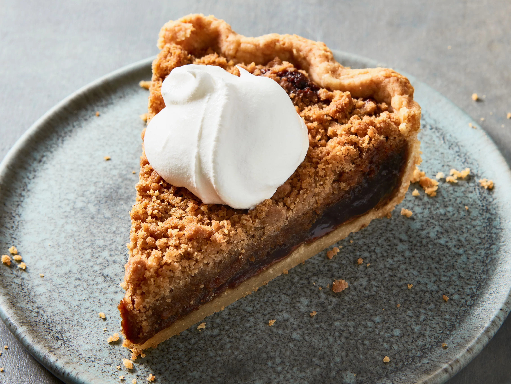

A specialty of southeastern Pennsylvania, this gooey, dark pie is an interesting combination of a rich filling made with molasses, brown sugar, butter, and a crunchy, crumbly topping. There are two theories to its origin: one says that the filling was so sweet that flies had to be shooed away as it was left to cool down, and the other theory says that it was inspired by Shoofly Molasses.
Meal prep time : 1 hour 45 minutes
Servings : 8